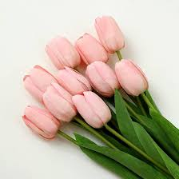

Tulips
Tulips are elegant , cup shaped flowers that signal the arrival of springs with their vibrant colours.they are unique in floral world because they continue to grow in height even after being cut.
Tulips are elegant , cup shaped flowers that signal the arrival of springs with their vibrant colours.they are unique in floral world because they continue to grow in height even after being cut.
